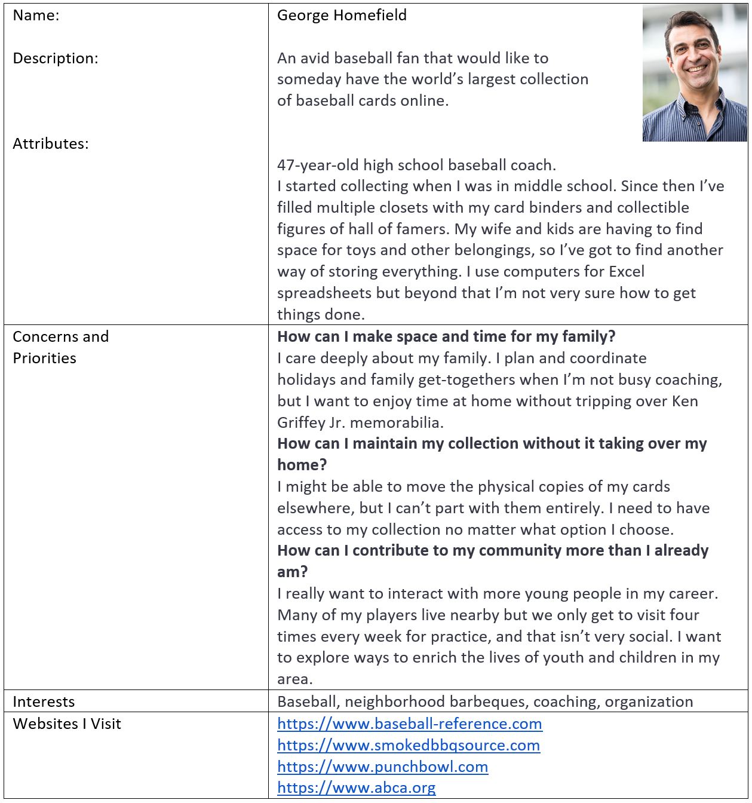
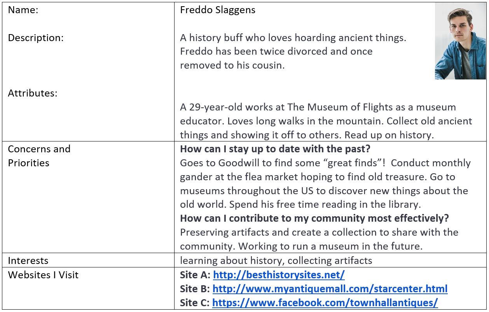
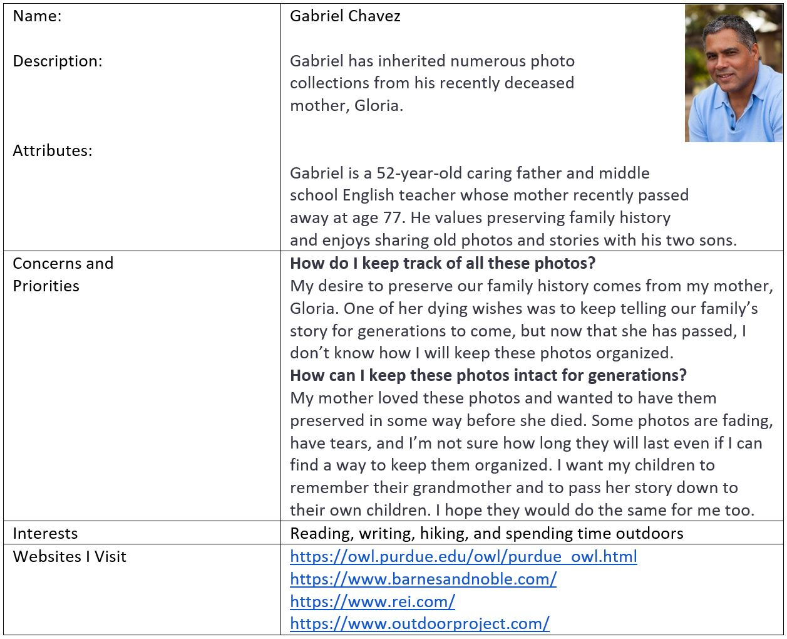
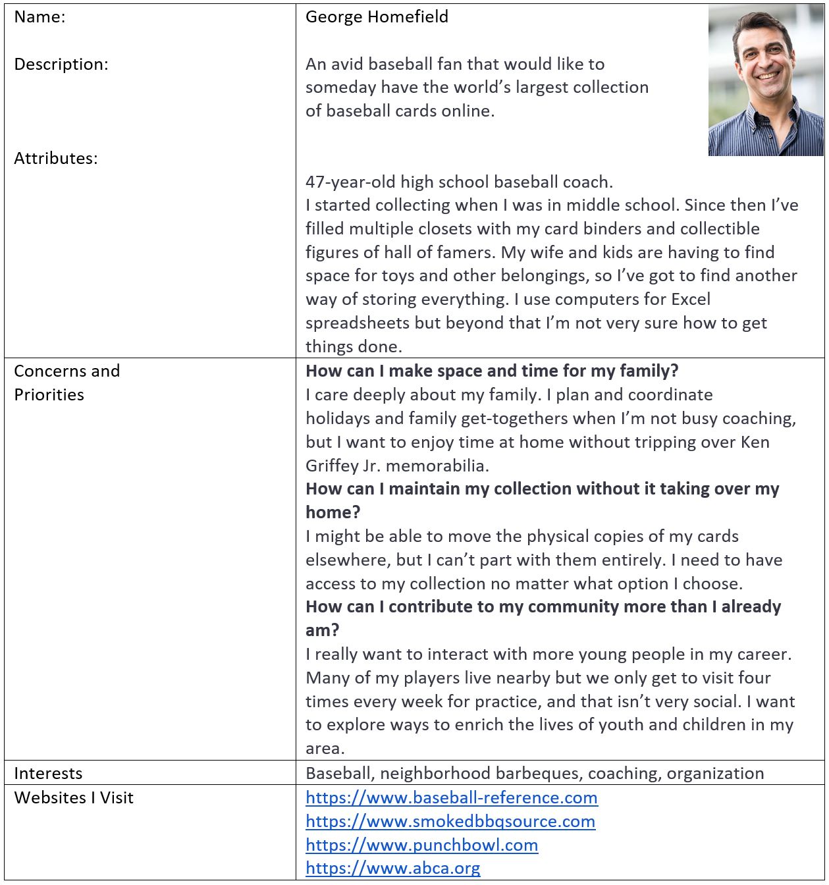
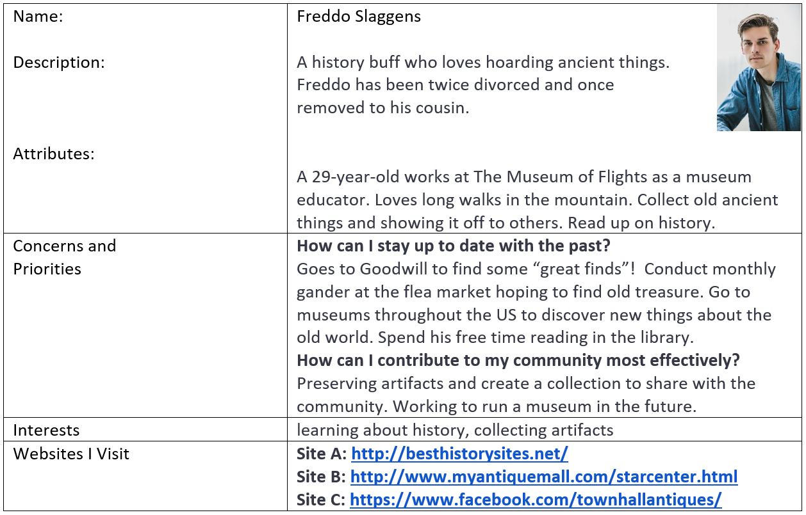
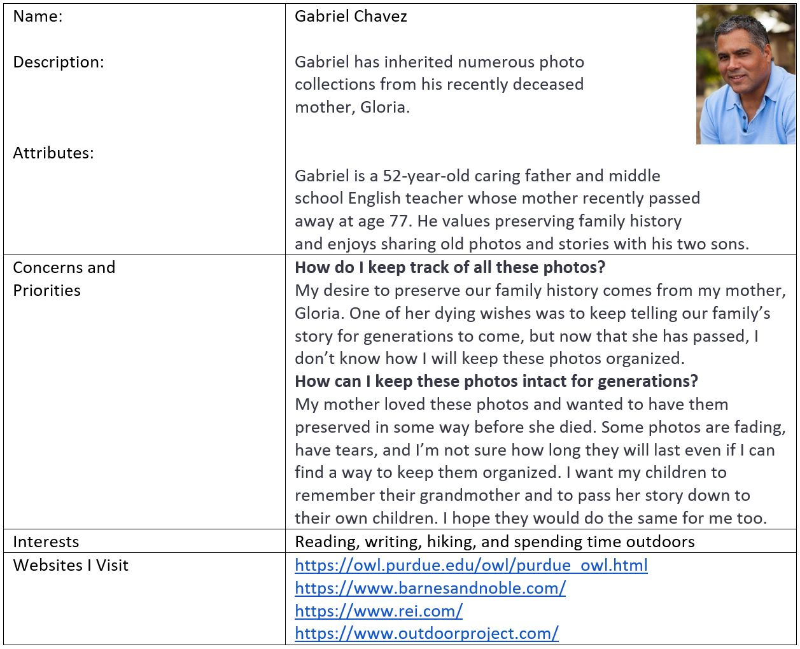

About
The Digitizing by Gwen website will provide a professional, organized, and personal portal to the media digitization services offered by the site owner. The web site will help customers understand the level of individual care they will receive, and the site’s mission of preserving analog media for future generations. The site will provide pages for reviewing all the services offered, and the option to contact the owner directly for more information.
Website
My Role
Ux Researcher and Web Developer
Tools Used
Balsamiq, Brackets, and Gimp
Duration
April 2019 - June 2019
When being partnered with the site owner, I scheduled a meeting with her to have a casual conversation about the website she was using. The focus was wanting to understand the service she provided, any design preferences she had, and what she wanted on the website overall.

This user profile I created was a primary persona. We figured that if someone wanted to digitize their old physical photos, it would be most likely the older generation. Having the older generation be the primary audience, there was also a priority of having the website be easy and intuitive to use.
 





The site owner requested that we included red, blue, and gold on the website. We also wanted the color palette to represent different characteristics.
Personality

I tested 3 users to understand the logic behind them sorting categories with the given menu options. I tested two users who were the age of our primary audience and one user who was very young to see if there was a difference between generations and their understanding of media formats.

These are the three Celtic Knots I created to be the sub-navigation on the website. When making these Celtic Knots, I had to design them with the spaces being slightly enlarged so that the photos could be placed inside them to link to another page.
This mockup page is to display the homepage of the website. One of the design requests from the site owner was to incorporate Celtic Knots throughout the site. I figured one way to include Celtic Knots is to use them as the sub-navigation.
This higher-fidelity mockup we created so we can test out how to use the colors the site owner requested. This is the video page that is one example of the multiple mockups we made to test out the look and feel of the site.
This is the home page of the website that is now published. We still wanted to keep the Celtic Knots as part of the navigation, display a photo of equipment and care when handling the media formats, and keeping the requested color palette.

What I took away the most from this project was a real sense of product development. This is the first time that I made a website for a client. With this lack of experience, the biggest lesson I gained from this project was learning how to organize and structure the development process of a project. By sitting down with my team and discussing how to navigate and create deadlines for this project, I truly understood the importance of utilizing the time I had.
If given an opportunity to go back and update this website even further, I would take the time to redesign the website. Being a coder, I didn't have a strong designer background at the time. With the design knowledge, I have now learned, I would like to make the website more visually appealing.